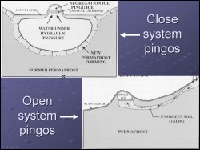
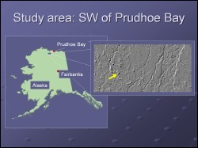
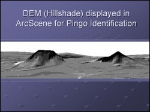

 Pingo is the Eskimo word for mound. Pingos, in the simplest words are mounds with ice cores and are found in permafrost rich environements in higher latitudes. There are two basic types of pingos, Hydrostatic (closed) and Hydraulic (open) type. The Alaska North Slope is majorly studded by hydrostatic or closed type pingos. In geometry, these pingos can be steep sided, or can be gently sloping with a broad basal diameter. This study focused on using GIS tools to map the pingo types and study the proximity of these pingos to known structural features.
 This project was carried out using a data set for a region south west of the Prudhoe Bay, Alaska. The area is close to the active petroleum exploration sites. Lithological and structural maps are available for the study area. Some data on subsurface structural trends interpreted from geophysical surveys, were also available for this study. These data reveal that the Eileen Fault runs across the selected study area, and a possible alignment of pingos to this fault zone may have significance for unconventional gas hydrate exploration.
 To map the pingos, the hillshade image from the airborne DEM for the area was displayed with vertical exxageration in ArcScene. Steep sided pingos showed up very well as shown in the figure, though the broad base pingos were more difficult to identify. Overlay of the pingo disptibution along with the location of the Eileen Fault Zone did not show any striking relationship. This may in part be due to the fact that the structural data available was only scanned from reports and the geospatial information in it may not be reliable. largely differing spatial resoltuion and projection parameters of the DEM and the scanned/digitized structural map may also have introduced significant errors. More in depth analysis with refined structural map is required to come to a reliable interpreation on the relationship of the Eileen fault to the distribution of pingos in the study area.